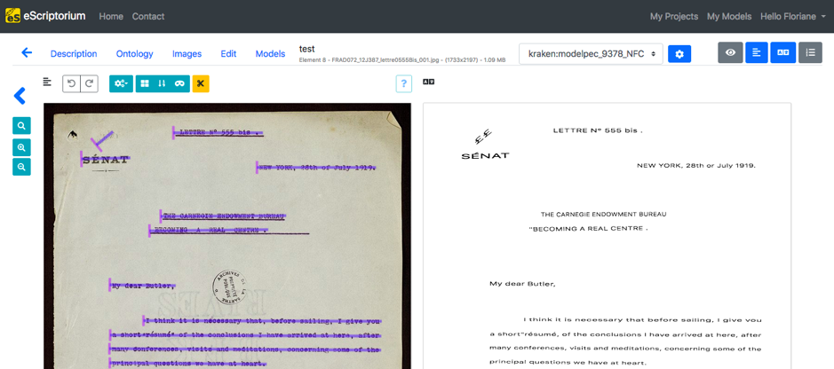

Metadata
- Id: EU.AI4T.O1.M3.2.2t
- Title: 3.2.2 Čo sú to dáta?
- Type: text
- Description: Základné informácie o tom, čo sú to dáta a ako sa využívajú pri umelej inteligencii.
- Subject: Umelá inteligencia pre učiteľov a od učiteľov
- Authors:
- AI4T
- Laurent Romary - Inria
- Licence: CC BY 4.0
- Date: 2022-11-15
Čo sú to dáta?¶
Úloha dát v AI systémoch¶
Vo všeobecnom digitálnom zmysle sa dátami myslia údaje (informácie), ktoré používa, spracúva a vytvára softvér počítačového systému.
Bez dát by nemohla existovať žiadna umelá inteligencia. Zohrávajú totiž ústrednú úlohu vo všetkých procesoch strojového učenia, pretože sa používajú na trénovanie aj testovanie. Dáta tiež vystupujú v podobe parametrov, ktoré sa používajú na riadenie trénovacích procesov. AI systém je tak v konečnom dôsledku kombináciou určitej softvérovej architektúry a všetkých učebných parametrov – tzv. modelom, ktorý je vlastne tiež tvorený dátami.
Ak chceme byť schopní posúdiť správanie AI systému, je nevyhnutné pochopiť, akú úlohu v AI systémoch zohrávajú dáta a spôsob ich výberu, dokumentácie a šírenia. Je to dôležité z hľadiska reprodukovateľnosti alebo pri porovnávaní dvoch rôznych AI systémov.
Napríklad pri spracúvaní prirodzeného jazyka je nevyhnutné mať k dispozícii veľké množstvo hovorených a písaných dát, pretože práve tieto dáta zabezpečujú kvalitné výstupy pri kontrole pravopisu, predikciách vyhľadávačov či strojovom preklade. Tieto dáta sa používajú na vytvorenie tzv. jazykových modelov, ktoré potom iným procesom poskytujú štatistické reprezentácie kombinácií rôznych slov alebo viet.
Udržateľnosť AI systémov preto do veľkej miery závisí od toho, aké metódy na správu dát sa využívajú pri ich navrhovaní.
Dáta pre AI systémy s dohľadom a bez¶
Ako sme už videli, rozlišujeme dva typy AI systémov v závislosti od toho, akým spôsobom sa dáta využívajú na ich trénovanie. Systémy s dohľadom sa spoliehajú na poskytovanie vstupov a zamýšľaných výstupov. Pri tréningu teda systém učíme generovať z neznámych vstupov najpravdepodobnejší výstup. Existuje niekoľko spôsobov, ako takéto dáta získavať. Príkladom môže byť databáza obrázkov, kde sú ku každému obrázku priradené kľúčové slová, alebo zbierka digitalizovaných dokumentov, ktoré prepísali anotátori (pozri obrázok nižšie).

AI systémy založené na učení bez dohľadu nie sú určené na konkrétne správanie, ale sú navrhnuté tak, aby zachytávali štatistické vlastnosti tréningových dát. To je napríklad prípad jazykových modelov ako BERT, ktoré zvyknú priraďovať podobné pozície v matematickom priestore slovám s rovnakými syntaktickými alebo sémantickými vlastnosťami, čo vypozorovali na veľkom počte vzorových viet pre každé slovo. Takéto modely sú veľmi účinné napríklad pri predpovedaní synoným alebo nasledujúcich slov v určenej sekvencii.
Zdroje – výber, dokumentácia, príprava, anotácia¶
Návrh AI systému v podstate závisí od vhodného návrhu dátového súboru, ktorý sa použije na jeho trénovanie. Do hry vstupujú rôzne faktory ako relevantnosť dát pre danú úlohu, veľkosť dát (ktorá by mala zodpovedať zložitosti architektúry AI softvéru – čím viac matematických parametrov sa má trénovať, tým viac dát treba) či rozmanitosť vzoriek, ktorá by mala odrážať komplexnosť úlohy.
V závislosti od použitých zdrojov býva ešte pred použitím dát v procese učenia potrebné vybrať a očistiť ich. Ak si ako príklad vezmeme učenie jazykového modelu na webovom obsahu, rôzne vzorky sa musia roztriediť podľa reálne použitého jazyka, očistiť od sprievodného kódu (HTML, JavaScript a pod.) a prípadne premiešať, aby sa predišlo porušeniu autorských práv. Dobrým príkladom takejto prípravy dát je návrh jazykového korpusu OSCAR.1
Návrh anotovaných dát pre AI systémy s dohľadom je zložitejší, pretože pri ňom treba navrhnúť schému anotácií, zorganizovať anotačné kampane a skontrolovať kvalitu anotovaných dát (napríklad posudzovaním toho, ako sa rôzni anotátori zhodli pri anotácii tých istých dát).
Celkovo je nevyhnutné mať proces návrhu dobre zdokumentovaný, aby bolo vo výslednom vytrénovanom systéme možné spätne vystopovať zdroj prípadného chybného správania až k jeho zdroju.
Zaujaté AI systémy¶
Ako sme už naznačili, správanie AI systému úzko závisí od povahy dát použitých na jeho trénovanie. Výsledkom môže byť celá škála rôznych skreslení, ktoré vyplývajú z výberu dátových súborov. Napríklad jazykový model trénovaný len na novinových článkoch bude pokrývať úplne iné typy výrazov a tém než model trénovaný na literatúre alebo obsahu sociálnych sietí. Podobne aj systémy na generovanie obrázkov budú odrážať veľkosť a rozmanitosť zdrojových databáz obrázkov (napr. umeleckých diel), ktoré boli použité.
Pri systémoch vytvorených pomocou učenia s dohľadom môže konkrétne skreslenie či zaujatosť vyplývať z toho, ako boli navrhnuté anotačné štítky, ako aj z toho, do akej miery sa anotátori pri interpretácii dát nechávajú ovplyvniť svojím kultúrnym pozadím. Ak chcete napríklad identifikovať nenávistné prejavy na sociálnych sieťach, interpretácia emócií anotátormi sa môže líšiť v závislosti od ich veku, kultúry či osobných postojov k anotovanému materiálu.
Celkovo treba mať vždy na pamäti, že AI systémy sú zo svojej podstaty veľmi konzervatívne vzhľadom na ich tréningové dáta, a teda aj vzhľadom na existujúce pozorovateľné javy. Od AI systému nemôžeme očakávať žiadnu formu skutočnej kreativity.
Hosting, zlučovanie a distribúcia dát¶
Vzhľadom na potenciálnu veľkosť a zložitosť tréningových dát pre AI systémy, ako aj výsledných modelov vznikli rôzne iniciatívy, ktoré umožňujú ich hosting a distribúciu.
Otvorené dátové súbory a modely môžu byť umiestnené na špecializovaných úložiskách (napr. Image Data Resource2) alebo v nešpecializovaných národných či medzinárodných úložiskách (napr. Zenodo3). Takéto úložiská spravidla poskytujú potrebnú infraštruktúru na správu autorstva a verzií, licencovanie a archiváciu ich obsahu.
V prípade zložitých úloh, kde na anotácii rôznych dátových vzoriek pracuje súbežne viacero tímov, niektoré iniciatívy fungujú ako katalógy pre príslušné zdroje dát. To je napríklad prípad iniciatívy HTR United4, ktorá združuje metadáta anotovaných dokumentov na rozpoznávanie (rukou písaných) textov.
-
Korpus OSCAR: https://oscar-corpus.com/ ↩
-
Image Data Resource: https://idr.openmicroscopy.org/ ↩
-
Zenodo: https://zenodo.org/ ↩
-
HTR United: https://htr-united.github.io ↩